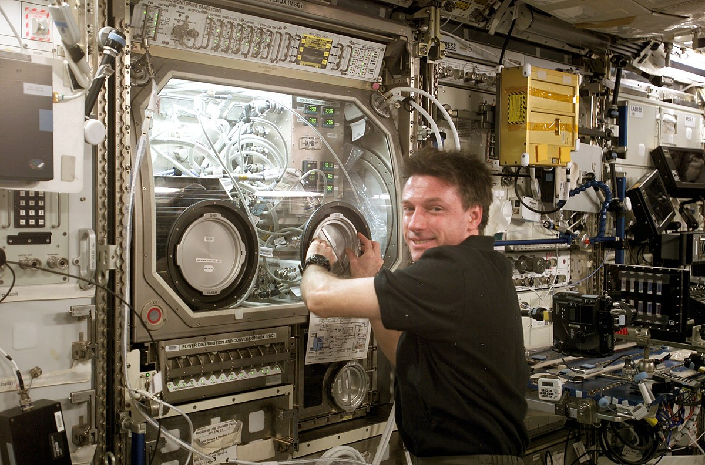

ABOUT The
International Space Station
The Space Station was officially given approval by President Reagan and a budget approved by the US Congress in 1984.
NASA Administrator James Beggs immediately set out to find international partners
who would cooperate on the program. Canadians, Japanese and many nations of the European Space Agency
began to participate in the program soon after.
blueprint
How It Begins
In the 1860s, Edward Everett Hale wrote the “Brick Moon” which was published in the Atlantic Weekly magazine. The Brick Moon had many of the characteristics of a space station; it was a man-made structure that orbited Earth and provided housing and life support
for its crew while serving as a navigation aid for people on Earth.
The first details of the engineering, design and construction of a space station were described by Herman Noordung, in 1928. He described a “wohnrad” or “living wheel“; a wheel shaped rotating space station. He reasoned that the rotation would be required to create artificial gravity for the crewmembers. He described how it would be assembled first on the ground for testing and then its individual
parts launched by rocket for reassembly in orbit.
Research on ISS

The International Space Station is an unprecedented achievement in global human endeavors to build and utilize a research platform in space. Since 2000, the station evolved from an outpost into a highly
capable microgravity laboratory.
In its third decade of continuous human presence, the International Space Station has a far-reaching impact as a microgravity lab hosting technology, demonstrations, and scientific investigations
from a range of fields. Results are compounding and new benefits are emerging.